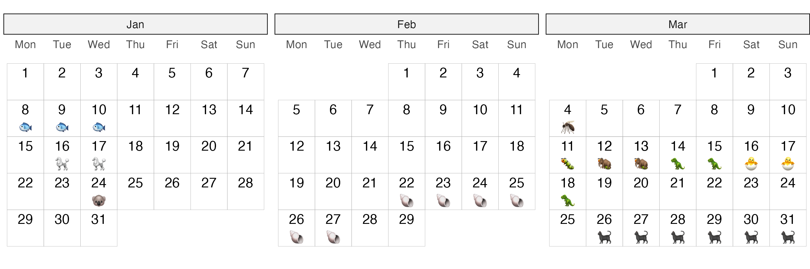

The goal of ggtilecal is to easily produce calendar layouts using ggplot2 tile and text geoms, while retaining some customisation.
Installation
You can install the development version of ggtilecal like so:
# install.packages("remotes")
remotes::install_github("cynthiahqy/ggtilecal")Examples
Empty Calendar
library(ggtilecal)
make_empty_month_days(c("2024-01-05", "2024-04-04")) |>
gg_facet_wrap_months(unit_date)
Customising empty calendars
Layers in .geom inherit the internally generated calendar layout mapping variables. gg_facet_wrap_months() provides uses lists of sensible default layers that can be easily modified. Customise the look of each calendar tile using geom_tile(), and the text number labels using geom_text().
library(ggplot2)
make_empty_month_days(c("2024-01-05", "2024-06-30")) |>
gg_facet_wrap_months(unit_date,
.geom = list(
geom_tile(color = "grey70",
fill = "transparent"),
geom_text(nudge_y = 0.25,
color = "#6a329f")),
.theme = list(
theme_bw_tilecal(),
theme(strip.background = element_rect(fill = "#d9d2e9")))
)Adding more layers to the calendar: Event emojis!
Prepare event details:
demo_events_overlap
#> # A tibble: 10 × 7
#> # Rowwise:
#> event_id title start end duration emoji details
#> <int> <chr> <date> <date> <int> <chr> <chr>
#> 1 1 Event 1 2024-01-08 2024-01-10 3 🟠Adipiscing mauris et …
#> 2 2 Event 2 2024-01-16 2024-01-17 2 🩠Sit aliquam feugiat p…
#> 3 3 Event 3 2024-01-24 2024-01-24 1 🨠Lorem placerat sagitt…
#> 4 4 Event 4 2024-02-22 2024-02-27 6 🚠Ipsum mollis fermentu…
#> 5 5 Event 5 2024-03-04 2024-03-04 1 🦟 Consectetur malesuada…
#> 6 6 Event 6 2024-03-11 2024-03-16 6 🛠Sit bibendum porta ut…
#> 7 7 Event 7 2024-03-12 2024-03-17 6 🦣 Lorem cursus sem cubi…
#> 8 8 Event 8 2024-03-14 2024-03-18 5 🦖 Adipiscing fames magn…
#> 9 9 Event 9 2024-03-16 2024-03-17 2 🣠Amet ligula sociis ve…
#> 10 10 Event 10 2024-03-26 2024-03-31 6 🐈‍⬛ Sit ridiculus id maec…Reshape event data into “long†form, which in this context refers to having one row per day of an event. In this example, if multiple events (i.e. 6,7,8,9) expand to the same days, we select only one event to plot an emoji for.
events_long <- demo_events_overlap |>
reframe_events(start, end) |>
dplyr::slice_min(order_by = duration, n = 1, by = unit_date)
events_long
#> # A tibble: 29 × 6
#> event_id title duration emoji details unit_date
#> <int> <chr> <int> <chr> <chr> <date>
#> 1 1 Event 1 3 🟠Adipiscing mauris et augue dapibu… 2024-01-08
#> 2 1 Event 1 3 🟠Adipiscing mauris et augue dapibu… 2024-01-09
#> 3 1 Event 1 3 🟠Adipiscing mauris et augue dapibu… 2024-01-10
#> 4 2 Event 2 2 🩠Sit aliquam feugiat primis duis s… 2024-01-16
#> 5 2 Event 2 2 🩠Sit aliquam feugiat primis duis s… 2024-01-17
#> 6 3 Event 3 1 🨠Lorem placerat sagittis vehicula … 2024-01-24
#> 7 4 Event 4 6 🚠Ipsum mollis fermentum in risus r… 2024-02-22
#> 8 4 Event 4 6 🚠Ipsum mollis fermentum in risus r… 2024-02-23
#> 9 4 Event 4 6 🚠Ipsum mollis fermentum in risus r… 2024-02-24
#> 10 4 Event 4 6 🚠Ipsum mollis fermentum in risus r… 2024-02-25
#> # ℹ 19 more rowsWe can create an empty calendar that spans the months of the events:
events_long |>
gg_facet_wrap_months(unit_date)
But maybe we want to indicate which days are event days:
emoji_cal <- events_long |>
gg_facet_wrap_months(unit_date) +
geom_text(aes(label = emoji), nudge_y = -0.25, na.rm = TRUE)
emoji_cal
Additional rows are introduced within gg_facet_wrap_months() to plot the non-event days. Specify na.rm = TRUE on subsequent layers to silence the warning. This silently removes both the missing values generated when calculating calendar variables AS WELL AS any “true†missing values originating in events_long.
If the emojis are not rendering, try changing your graphics device. For knitr output this can be controlled using the dev chunk option. For previews in RStudio, change Settings > General > Graphics (e.g. to AGG). To save use something like ggplot2::ggsave("ggtilecal.png", emoji_cal, height=3, width=9, dpi=300)
Add interactive elements
We can also add interactive tile layers using ggigraph:
library(ggiraph)
library(ggplot2)
gi <- events_long |>
gg_facet_wrap_months(unit_date) +
geom_text(aes(label = emoji), nudge_y = -0.25, na.rm = TRUE) +
geom_tile_interactive(
aes(
tooltip = paste(title),
data_id = event_id
),
alpha = 0.2,
fill = "transparent",
colour = "grey80"
)
if(interactive()){
ggiraph::girafe(ggobj = gi)
}